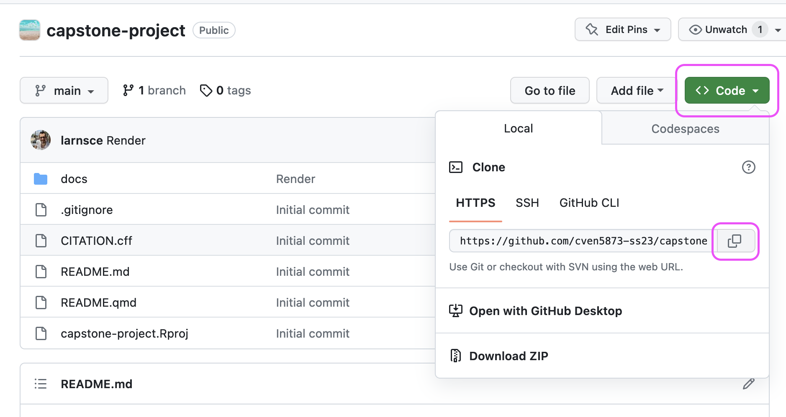

| category | items | points |
|---|---|---|
| technical | Data manipulation includes at least one vector coercion (e.g. from vector type character to vector type factor). | 4 |
| technical | The report renders without errors to HTML format and contains at least four chapters of heading level 1 that are named: Introduction, Methods, Results, Conclusions. | 10 |
| technical | YAML header of report has title, author, date, and table of contents that are correctly displayed in the compiled HTML output. | 4 |
| technical | Warnings are hidden from the compiled output, but code is shown in the compiled output. | 2 |
| technical | The report has at least two data visualisations. | 20 |
| technical | Each data visualisation has edited human-readable labels (e.g. axis labels, legend title). | 4 |
| technical | Each data visualisation applies at least of once scaling function (e.g. color/fill, axes). | 4 |
| technical | Each data visualisation has a label defined in the code-chunk options. | 4 |
| technical | Each data visualisation has a caption defined in the code-chunk options. | 4 |
| technical | Each data visualisation has an alternative text that describes what type of visualisation it is and trends or learnings from the visualisation. | 4 |
| technical | Each data visualisation is cross-referenced in the narrative using the defined label from the code-chunk options. | 4 |
| technical | The report has at least one table with summary statistics (e.g. count, mean, median, standard deviation, etc.) | 8 |
| technical | Each table is formatted in the rendered output using a function taught during the course (e.g. kable() function or gt() function) | 2 |
| technical | Each table has a label defined in the code-chunk options. | 2 |
| technical | Each table has a caption defined in the code-chunk options. | 2 |
| technical | Each table is cross-referenced in the narrative using the defined label from the code-chunk options. | 2 |
| intellectual | Introduction section with 3 to 5 sentences introduces the context within which the data was created. | 5 |
| intellectual | Methods section describes in 3 to 5 sentences how the data was obtained. | 5 |
| intellectual | Figures and tables in Results section are interpreted with 2 to 3 sentences each. | 5 |
| intellectual | Conclusions concisely summarize findings in a bullet point format. | 5 |
Capstone Project
The Capstone Project report is the last assignment of the course and contributes 40% to the total grade (see Course Overview). The final two weeks are reserved for working on the report.
GitHub repository
A repository for each student is established. This repository contains self-identified data that was shared in week 3 of the course. Some data cleaning steps are performed by the course instructor, so that each student has a tidy dataset to work with.
The repository further contains an empty Quarto file (report.qmd), which students must use to write their report. A list of graded items was prepared to guide students in writing the report.
Graded items
Table 1 is a detailed list of items for grading of the capstone project report are presented. The sum of points is 100 and spread over technical and intellectual items as presented in Table 2.
| category | description | points |
|---|---|---|
| intellectual | This item is part of the intellectual framing of the capstone project report. | 20 |
| technical | This item is a technical part of the capstone project report. | 80 |
Get started
- Open the GitHub Organisation for the course: https://github.com/cven5873-ss23/
- Locate the capstone-project repository with your username
capstone-project-GITHUB-USERNAME - Open your capstone-project repository
- Click on the green button titled “Code” (see screenshot below)
- Click on the link in the pop-up window to your clipboard (see screenshot below)

- Open the Posit Cloud workspace for the course: (cven5837-ss23)
- Open the “Content” page
- Click on “New Project” -> “New Project from Git Repository”
- Paste the link to your capstone-project repository from your clipboard
- Keep the tick next to “Add packages from the base project”
- Click the “OK” button